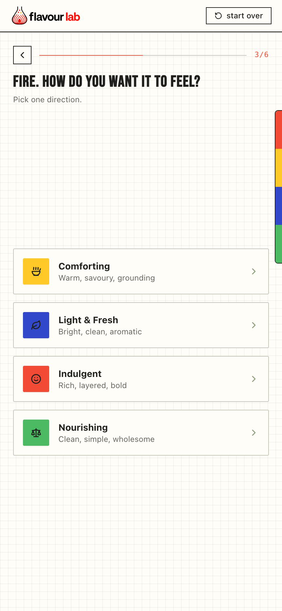
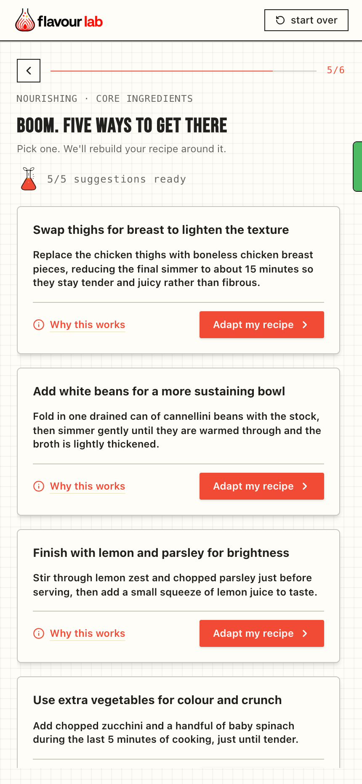

What I Was Solving
I get bored of eating the same thing on repeat, but I don't want to spend a lot of time in the kitchen or rack my brain trying to invent an entirely new dish every time I want variety. I make the same base dishes — mince with onion, garlic and tomato paste, for example — and know there is potential to turn them into something that feels different. I just don't always know which changes to make, beyond mixing up the condiments.
I know how to follow a recipe, and have some memorised. But knowing how to make a dish is different from knowing how to change it. Looking for a new recipe also means more decisions: would I like it, do I have the ingredients, and what would I need to buy? Often I just make the same version again.
Flavour Lab came out of that frustration. I wanted a way to get more variety from what I already cook, and to gradually understand why a change works so I could become less dependent on recipes in the first place.
What I Built
You start with a recipe, choose an experience — Comforting, Light & Fresh, Indulgent, or Nourishing — and choose the kind of change you want to make. The app suggests five adaptations, explains them, and turns the one you select into a complete recipe.
We built the first version with AI assistance. My focus was the product thinking and the AI layer: the prompts, rules and structured data that turn a recipe and someone's preferences into useful suggestions. I am now continuing the build independently, including the integration, evaluation and interface refinements.
{kind=link}

{kind=link}

Screenshots from the newer local interface, using illustrative demo suggestions. The live app may look different.
Working With Camila
I worked on the first version with my friend Camila, who built the initial frontend and helped map the flow between the interface and the AI layer. Her work covered the screens themselves, the visual and content systems, and the details between steps: what appears while a request is loading, what happens when it fails, and how someone moves through the recipe flow.
My side was what we loosely called the “backend”, although much of the work was defining the AI's behaviour and the information exchanged with it. We used payload schemas — agreed structures for the data sent and returned — alongside rules for what each response should contain. That gave the frontend and the AI layer a shared contract to work from.
The deployed app does also have a small server-side layer. It assembles the instructions, calls the model securely and checks the response before returning it to the interface. The schemas describe that exchange; the server code carries it out.
The Decisions Behind It
Give a vague preference some structure.“More comforting” is easy to ask for and surprisingly hard to define. The app pairs the chosen experience with a specific kind of change, then supplies the relevant part of the culinary framework to the model.
Keep the change small enough to understand.Five suggestions give the cook options, but only one goes into the adapted recipe. That keeps the connection between the choice and its effect easier to follow.
Treat the explanation as part of the product.I want someone to leave with a little more cooking intuition. That also raises the bar: an explanation needs to be useful and defensible, not just sound convincing.
What Has Been Hard
Getting the app to return a well-formed response is only one part of the problem. A suggestion can fit the required format and still be impractical, poorly explained, or a weak match for the experience the cook chose. I have been separating those technical checks from evaluations of the actual content.
Waiting is another product problem. In one end-to-end Preview test, suggestions took about 18 seconds. I have since implemented progressive loading locally so people can start reading complete suggestions as they arrive. It still needs live verification; I am not treating it as a proven speed improvement.
What I Still Need to Learn
The connected MVP works in Preview. The more important question is whether people actually cook with a suggestion and find it worth repeating. I also want to learn when they would use it: while deciding what to cook, or earlier when planning and shopping.
That is the next test. A successful AI response is useful evidence that the system runs; it does not yet tell me that the product earns a place in someone’s kitchen.